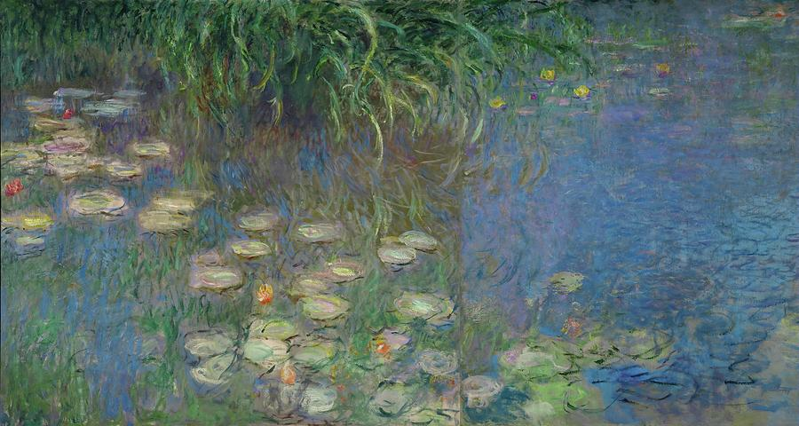
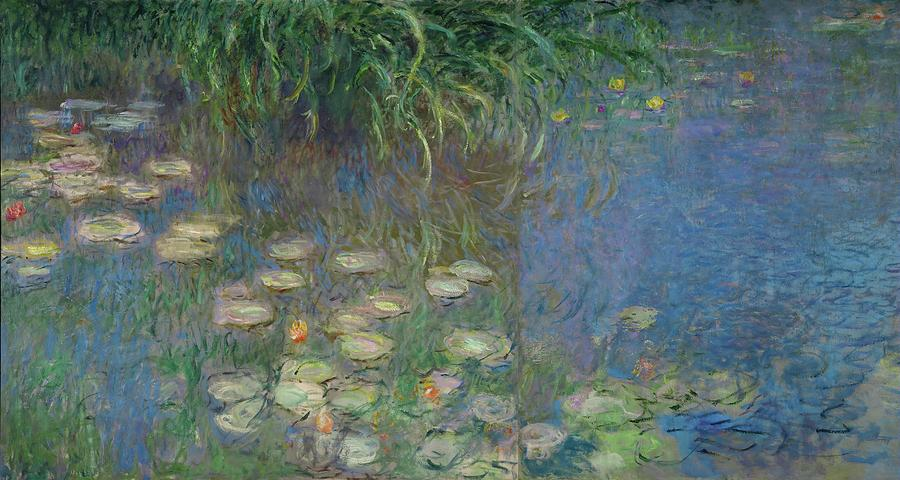
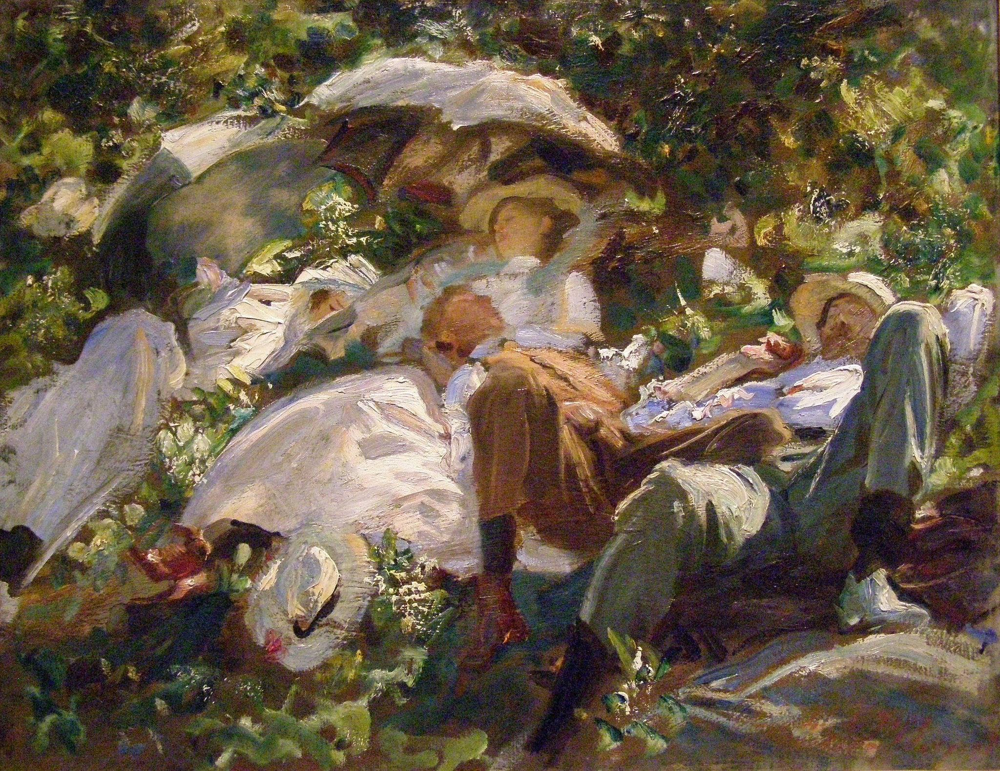
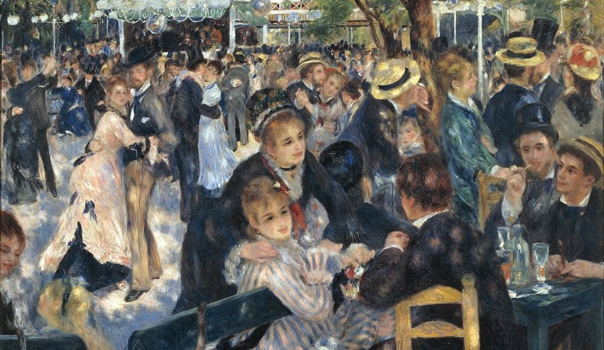
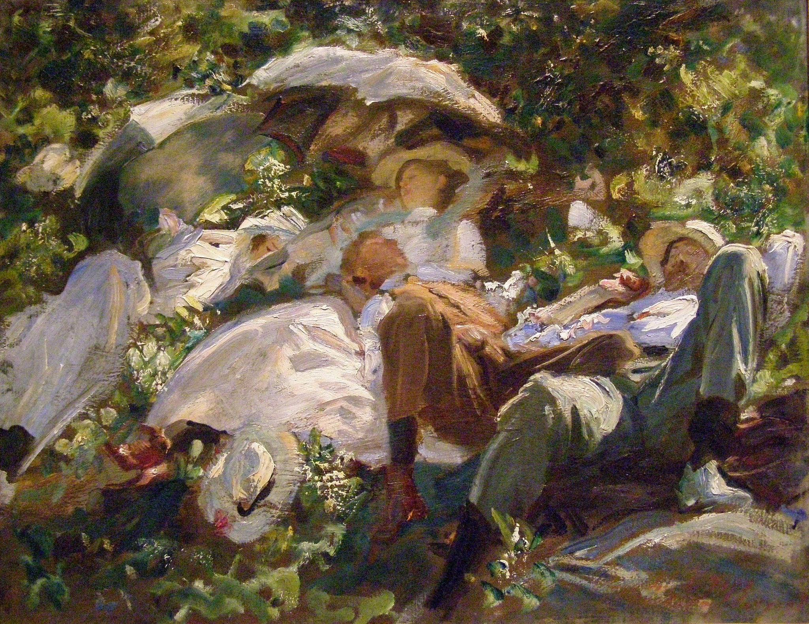
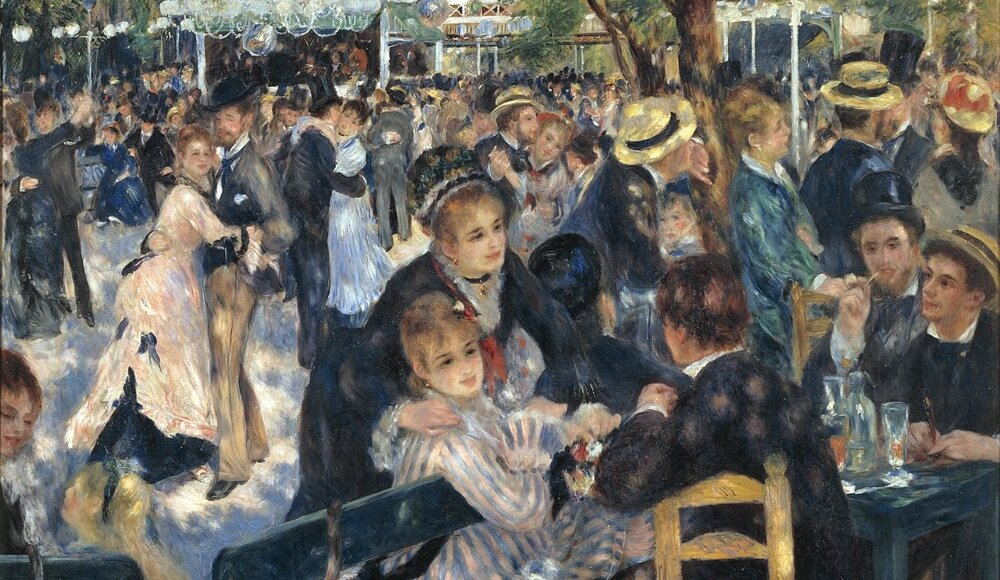

Artiesten voor Verandering
Profielen van kunstenaars die zich inzetten voor sociale verandering.

Diego Rivera
Stijl: Mexicaanse Muralisme
Beroemd Werk: Muurschilderingen in het Nationaal Paleis van Mexico-Stad
Diego Rivera's monumentale muurschilderingen vertellen het verhaal van de Mexicaanse geschiedenis en sociale rechtvaardigheid. Zijn werk was vaak politiek geïnspireerd en benadrukte de strijd van arbeiders voor betere arbeidsomstandigheden.
Banksy
Stijl: Street Art, Graffiti
Beroemd Werk: Diverse anonieme straatkunstwerken
Banksy is een mysterieuze straatkunstenaar wiens werk vaak politieke en maatschappelijke boodschappen overbrengt. Zijn kunstwerken bevinden zich op openbare muren over de hele wereld en roepen vragen op over thema's als ongelijkheid, onderdrukking en politieke macht.
Francisco Goya
Stijl: Romantiek
eroemd Werk: "De Derde Mei 1808" (1814)
Francisco Goya was een Spaanse kunstenaar wiens werk vaak politieke en sociale thema's verkende. Zijn schilderij "De Derde Mei 1808" documenteert de gruwelen van de Napoleontische oorlogen en is een krachtig symbool van verzet tegen tirannie.
 

 


